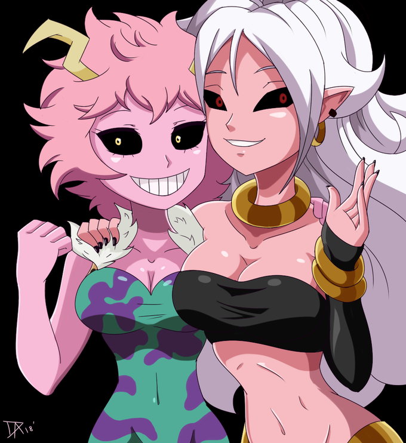
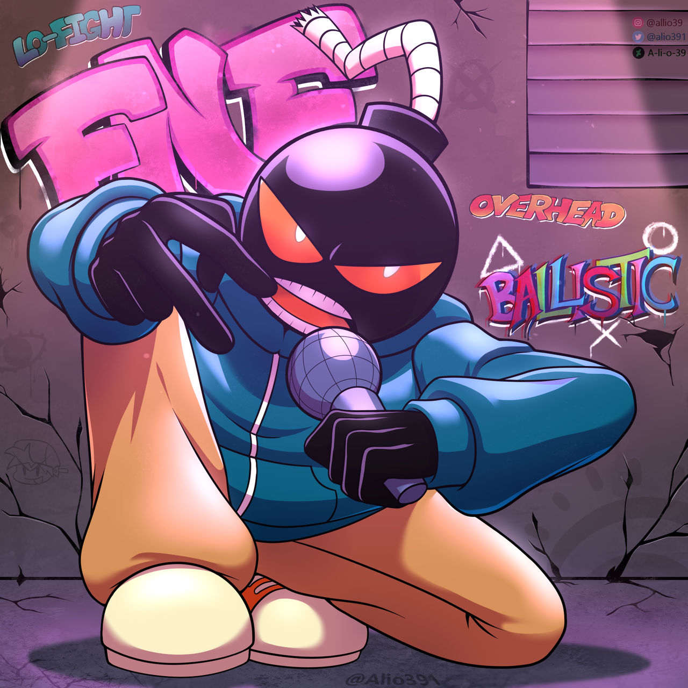

Mina ashido y Androide 21
"Ellas son mina ashido y androide de los animes": My hero Academia y Dragon ball respectivamente.
ellas son amigas muy unidas por su color piel y personalidad
Originalmente mina iba a tener unos cuernos algo grande y algo desnutrida y Androide 21 no iba a ser una androide. Pero al final se descartaron esas ideas.
Whitmore(Whitty)
"Es un personaje creado por sock.clip para el juego de ritmo": Friday Night Funkin a traves de un mod.
Whitty sufrio una funa gracias por los fans que usaban al personaje para situaciones peculiares y el creador dejo el personaje por completo.
Pero regreso para la actualizacion de su mod y con eso regresa la leyenda de los mod de FNF.